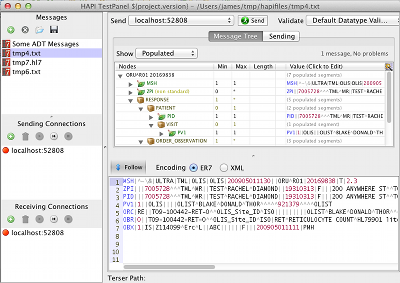

Welcome
This is the home page for the HAPI project. HAPI (HL7 application programming interface; pronounced "happy") is an open-source, object-oriented HL7 2.x parser for Java. HL7 ( http://hl7.org ) is a messaging specification for healthcare information systems. This project is not affiliated with the HL7 organization; we are just writing some software that conforms to their specification. The project was initiated by University Health Network (a large multi-site teaching hospital in Toronto, Canada).
HL7 v2 Java APIA full featured Java API you can use to add HL7 capabilities to your applications.
|
FHIR Java APIHAPI has now introduced an API for developing applications based on the emerging HL7 FHIR specification. See the HAPI FHIR site to learn more. |
HAPI TestPanelA rich testing application which can be used to edit HL7 messages, transmit them, validate them, and more.  |
HAPI HL7v2 2.4.1 and 2.5.1 Released - Nov 1, 2023
A last minute bug found in HAPI FHIR 2.4 and 2.5 was discovered and fixed, so two new releases have been produced.
HAPI HL7v2 2.4 and 2.5 Released - Oct 30, 2023
Over five years since the last release, we are pleased to announce availability of HAPI HL7v2 2.4 and HAPI HL7v2 2.5. These releases are being produced on the same day with one difference: Version 2.4 uses the legacy javax.servlet package in the hapi-hl7overhttp module, whereversion 2.5 uses the new jakarta.servlet package in this module. There are no other material differences between the two versions. These releases include the following changes:
- This release addresses a security vulnerability in the XML parser used to parse XML-based HL7 v2.x messages.
- JDK 11+ is now required in order to use or build this library.
- The Testpanel application can now be run on modern JDKs (the previous version failed to start on JDK 9+ due to a Java module issue).
- The module that has historically been used to generate the "HL7 structures" source files has been retired, and the generated structures are now checked in to the source repository. Unfortunately the generator is not sustainable in its current form (it required a Windows XP VM in order to run, and that VM has finally stopped working). If you are interested in helping to modernize the structures generator, please get in touch!
- Check the the Changelog for a complete list of changes.
HAPI HL7v2 2.3 Released - Jun 23, 2017
A new version of HAPI HL7v2 has been released! This new version includes a number of bugfixes, as well as new message structures for the following versions of HL7: v2.7, v2.8, and v2.8.1.
In addition, we have changed the TestPanel distribution so that it is now distributed as a simple executable JAR with some scripts to start it.
I want to thank everyone who has been waiting for this release for their patience. I have stated on the mailing list quite a few times over the last few years that a new release was imminent, and it never materialized. The basic explanation for this is that building a new release has become quite a laborious process that requires quite a lot of hand-holding.
A bit of insight into the HAPI HL7v2 build process: The basic trouble is that building the structures is only possible on a Windows XP system because of the way it works. Essentially the build requires an ODBC driver for an Access MDB file (this is how the HL7 databases are distributed) and this driver was discontinued after Windows XP. Unfortunately the Javac compiler is unwilling to compile the large number of files that make up a structure JAR on Windows XP, so the process now involves building structures on XP, then copying them into a build on Linux and compiling. This whole thing really needs refactoring, but this would be a huge project and isn't something we have capacity to take on at this point.
As an additional note, we have now migrated the project from Sourceforge over to GitHub: https://github.com/hapifhir/hapi-hl7v2. The new project website can be found at: https://hapifhir.github.io/hapi-hl7v2. As a side note, we are now going to refer to this project as "HAPI HL7v2" and the FHIR version of HAPI as "HAPI FHIR". Hopefully this will remove some confusion, as these are completely separate libraries with separate release cycles.
Thanks to everyone who contributed to this release. As always, check the the Changelog for details about what's new.
HAPI 2.2 Released - March 4, 2014
A new release of HAPI (Core library, HL7 over HTTP, and Structures) has been uploaded to Sourceforge and the central Maven repo.
This new release is packed with new features. Read about them in the Changelog. There are also a number of upgrades to the base API.